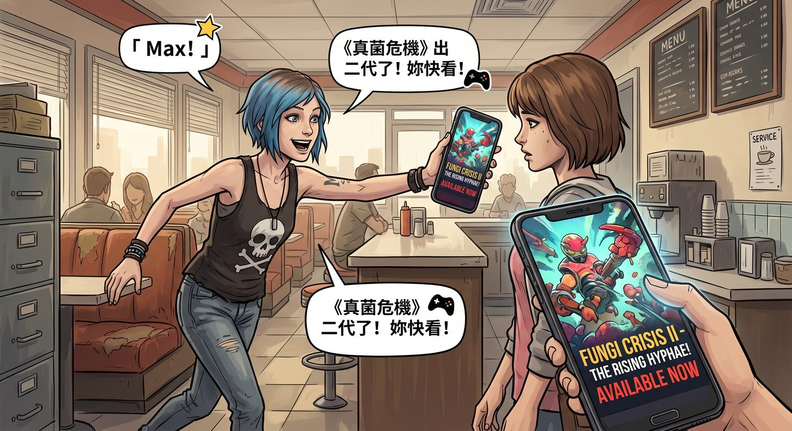

真菌危機

一、意外發現
打工日籌備正忙的空檔,Chloe 窩在餐廳角落滑手機,忽然「啊」了一聲,興奮地跳起來。
「Max!」她衝過去,手機螢幕懟到 Max 面前,「《真菌危機》出二代了!妳快看!」
Max 湊近一看,螢幕上是那款她們幾年前一起熬夜打完、劇情虐得兩人抱頭痛哭的末日生存遊戲續作預告。
「今晚就玩!」Chloe 兩眼放光。
正巧 Joyce 端著托盤經過,隨口問了句:「功課寫完了?」
「寫完了寫完了,」Chloe 反應飛快,一把攬過 Max 的肩膀,「Max 等下要來幫我輔導功課,順便……可能會玩一下遊戲放鬆放鬆。」
Joyce 將信將疑地「嗯」了一聲,轉身回了廚房。
Max 卻沒有 Chloe 那麼興奮,反而神情有點微妙:「妳……最好還是別搜太多這款遊戲的相關新聞。」
「為什麼?」Chloe 不解。
Max 沒接話,只是嘆了口氣。
Chloe 疑惑地低頭滑了幾下手機,搜尋欄打上遊戲名字,底下自動跳出的熱門新聞標題瞬間讓她臉色一沉——各種論戰、抵制、劇情爭議的標題排山倒海地湧出來。
她秒懂了。
二、網路開戰
Chloe 二話不說,點開自己那個平時很少用的社群帳號,火速找到負責這款遊戲的工作室官方帳號,在底下留了一則措辭激烈的抗議留言。
沒過多久,對方帳號竟然真的回覆了——但不是解釋,而是反過來嗆聲,說她「格局狹隘」「缺乏包容性」「帶著厭女情結批評女性角色」,一連串扣帽子的話術輸出得又快又流暢,末尾還貼心地標注了一行小字:「本回覆由 AI 客服自動生成」。
Chloe 盯著那行小字,氣得手都在抖。
「連吵架都懶得親自來,」她咬牙切齒,「用機器人打發我?!」
三、Warren 的情報
正好在旁邊幫忙修理餐廳暖氣管線的 Warren,聽到動靜探出頭來。
「妳現在才知道?」他擦了擦手上的機油,一臉「你也太後知後覺」的表情。
「知道什麼,」Chloe 沒好氣地追問,「妳倒是說清楚,這人到底什麼來頭,憑什麼囂張成這樣?」
Warren 放下扳手,索性一屁股坐到旁邊的板凳上,像是找到機會大展身手似的,開始如數家珍。
「一代發售的時候,他就已經是業界公認的才子了,」他扳著手指細數,「劇本紮實、演出調度講究,拿獎拿到手軟。二代因為劇情走向太大膽,得罪了不少死忠玩家,罵聲確實兇猛過一陣子——但妳猜怎麼著,他非但沒有低頭道歉,反而順勢把爭議本身當成宣傳素材,到處接受採訪暢談『藝術創作本該挑戰舒適圈』,話題度反而越滾越大。」
「這麼會操作?」Chloe 皺眉。
「豈止,」Warren 繼續說,語氣裡帶著點又佩服又無語的複雜情緒,「後來他直接被挖去監製同名改編的電視劇,搬上好萊塢的舞台,身價翻了好幾倍。現在他根本懶得親自下場跟玩家吵架,官方帳號基本上全丟給 AI 客服和公關團隊處理,自己則專心去拍片、上頒獎典禮走紅毯了。」
「所以我剛才等於是,」Chloe 一臉生無可戀,「對著一個沒有感情的聊天機器人罵街,對方本人壓根都不知道我存在?」
「基本上是的,」Warren 聳肩,忍不住補了句吐槽,「說真的,這年頭當個爭議製作人,好像比乖乖拍部風平浪靜的作品更容易翻紅——反正只要話題夠大,罵聲本身就能變現,誰還在乎妳這種小玩家一個人在底下氣得半死。」
「這麼厲害?」Chloe 咬牙,「那遊戲和劇集,是不是至少撲街了,好歹讓我出口氣?」
四、數據不會說謊
「這個問題,」正在角落測試餐廳收銀系統回歸bug的 Kenji 頭也不抬地接話,「數據會告訴妳答案。」
他順手調出一份公開的銷售趨勢圖表,轉過螢幕給她看。
「長尾銷售其實相當亮眼,」他指著圖表上緩慢但持續攀升的曲線,「尤其有趣的是,很多當初沒玩過一代、單純衝著話題進來的新玩家,反而覺得二代不錯。電視劇那邊也差不多,吸引了大批完全沒接觸過遊戲原作的圈外觀眾,口碑意外地兩極卻穩定。」
Chloe 一屁股坐倒在椅子上,一臉難以置信:「所以吵成這樣,人家反而越吵越紅?」
五、陰謀論
「我倒是聽過一個說法,」正拿著手機翻看 Yelp 上餐廳評價的 Brooke,頭也不抬地插了句話,「純粹陰謀論啦,你們別當真——說是佔領華爾街那波運動徹底失敗以後,有錢有勢的那批人學乖了,與其被底層團結起來針對,不如想辦法讓大家在雞毛蒜皮的文化議題上互相撕咬,分散注意力,誰都沒空真正去關心結構性的問題。」
Chloe 沉默了幾秒,忽然笑了,笑得有點滲人。
「所以我也是被操縱的一員?」她自嘲地攤手,「我還在那當什麼多元代表呢。」
「妳現在,」Max 適時地提醒,語氣裡帶著點無奈,「早就已經不是什麼多元代表了,妳只是單純看不慣而已。」
Chloe 深吸一口氣,還是憋著一肚子沒地方發洩的怨氣,轉身衝進廚房,抓起食材開始搗鼓她的漢堡——但這次她沒有像往常那樣往辣醬瓶子伸手。
David 剛好路過,眼疾手快地一把按住她伸向調料架的手。
「上次那個,」他語氣堅決,「已經是我這輩子能承受的極限了,真的不行。」
Chloe 瞪了他一眼,終究還是收回了手,轉而用指甲狠狠地在牛肉餅表面戳出一個又一個坑坑窪窪的痕跡,像是在洩憤,又像是在雕刻某種說不清道不明的憤怒藝術品。
「不加辣,」她從牙縫裡擠出這句話,手上的動作絲毫沒停,「但這塊肉,今天算它倒霉。」